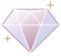

YOUR LITTLE JEWEL ATELIER

親手，雕琢一束光。
讀圖、調機、輕磨。把每一道刻面，交給你的手感。
下一個動作
切磨工作台MAST TYPE · 01
42.0° · INDEX 00亭部 P1
3D 畫面無法啟動，請使用支援 WebGL 的瀏覽器。
拖曳環繞觀察 · 雙指縮放THREE.JS / LIVE 3D
ON YOUR DOP海沫綠 · 練習玻璃12.80 ct / 粗磨表面

讀圖、調機、輕磨。把每一道刻面，交給你的手感。